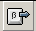

Insert a Symbol
Symbols are characters that you may not be able to type easily, e.g., copyright (©), trademark (TM). AbiWord provides an extensive list of such symbols you can easily insert into your documents. The types of symbols you can insert depend on the available fonts. The default Symbol font includes arrows, bullets, and scientific symbols. Additional symbol fonts, such as Wingdings, include decorative symbols.
Let's insert a symbol by following these easy steps:
- Place the cursor where you would like your symbol to appear
 - Select the button
The Insert Symbol dialog box appears.
- Select the symbol of your choice from the default Symbol window by pressing the left mouse button once on the symbol
- Select
- Select
- Select the button
Now, let's insert a symbol that is not available in the default Symbol font by following these four easy steps:
- Select Wingdings from the font drop-down
- Select a symbol of your choice by pressing the left mouse button
- Select
- Select
Note: Sometimes various symbols will not print. Some systems do not support all character sets.
You have just completed this section of Lesson 4 and can now insert a symbol into your documents. If you would like to move forward and learn how to insert page numbers, select Next. If you'd like to go to a different section within this lesson or to a new lesson, choose one of the options in the Navigation bar.